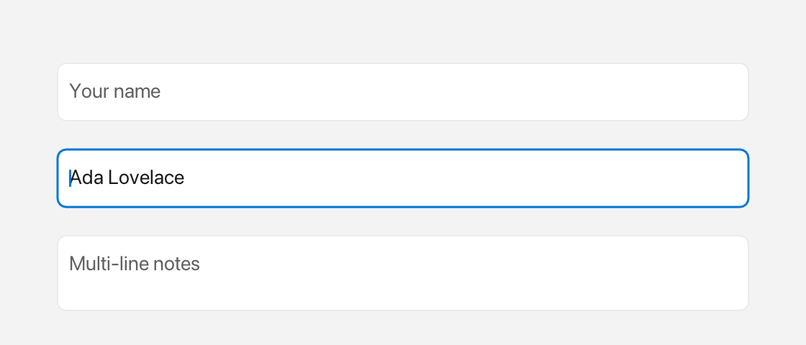

TextInput
A TextInput is an editable field for single-line or multi-line text that supports selection, clipboard, undo/redo, and a non-editable prefix.

Placeholder, focused input and a multi-line field.
What it's for
Use a TextInput when the user needs to enter or edit text. It edits text with a blinking cursor and selection highlight, shows a placeholder when empty and unfocused, and can keep a prefix (for example Icons::search) fixed at the left so it cannot be edited.
The words you need
- placeholder — greyed-out hint text shown while the field is empty and not focused.
Inline— rich content that can mix text and icons. The$()shorthand builds it. See Inline and Icons.- callback — a small function the field calls when something happens, such as a change or a submit.
In the examples below, win is an open window (see Window).
A first example
// Constructor argument is the placeholder, not initial text (bounds default to Rect{}):
auto& ti = win.add<fluffy::TextInput>("Type here…");
ti.setBounds(fluffy::Rect{40, 40, 300, 36});
ti.setText("Hello");
std::string t = ti.text();
The constructor argument is the placeholder, not the initial text: the field starts empty and shows "Type here…" until you type. Bounds default to Rect{}, so set them with setBounds. setText replaces the content, and text() returns what is currently there.
Common tasks
Set and read the text
ti.setText("Hello"); // replaces content, resets cursor/selection/undo history
std::string t = ti.text();
setText resets the cursor, the selection, and the undo history.
Show a placeholder and a prefix
ti.setPlaceholder("Search…");
ti.setPrefix(fluffy::$(fluffy::Icons::search << " "));
The placeholder appears when text is empty and the field is not focused. The prefix is fixed at the left and is not editable.
Use multiline mode and handle submit
ti.setMultiline(true);
bool m = ti.isMultiline();
When multiline is true, Enter inserts a newline; when it is false, Enter fires onSubmit. The default is false.
Control growth and scrolling
ti.setGrowable(false); // default is growable == true
bool g = ti.growable();
// Manual scroll (usually handled via ensureCursorVisible)
float sx = ti.scrollX(), sy = ti.scrollY();
ti.scrollToX(0); ti.scrollToY(0);
If growable is true, naturalWidth and naturalHeight grow with the content.
Focus the field
ti.setFocused(true); // focusing via click is automatic
bool f = ti.isFocused(); // blurring clears the selection
A click focuses the field automatically. Blurring clears the selection.
Listen for changes and submits
ti.onChange([](const std::string& s){ }); // preferred; setOnChange/setOnSubmit also work
ti.onSubmit([](const std::string& s){ std::printf("submit %s\n", s.c_str()); });
onChange runs after every insertion or deletion. onSubmit runs when you press Enter in single-line mode.
Load a text input from YAML
TextInput:
placeholder: "Type here…"
text: "Hello"
multiline: false
growable: true
x: 40
y: 40
width: 300
height: 36
onSubmit: "submitted"
Keyboard
← → move, Shift+← → select, Up/Down move between lines (multiline, keeps visual column), double-click selects a word, drag extends the selection. Ctrl+A all, Ctrl+C/V/X clipboard, Ctrl+Z / Ctrl+Shift+Z / Ctrl+Y undo/redo, Home/End, Backspace/Delete, Tab inserts 4 spaces in multiline mode only.
Good to know
focusedis set automatically on click and controls whether the field receives keyboard input.- The constructor argument is the placeholder, not the initial text.
multilinedefaults tofalse.growabledefaults totrue.
Quick reference
Properties
| Property | Type | Description |
|---|---|---|
text |
string |
Current content. |
placeholder |
string |
Hint shown when text empty and not focused. |
prefix |
Inline |
Fixed icon+text at left (e.g. $(Icons::search << " ")). |
multiline |
bool |
true makes Enter insert newline; false fires onSubmit. Default false. |
growable |
bool |
If true, naturalWidth/Height grow with content. |
focused |
bool |
Whether it receives keyboard input. Set automatically on click. |
Methods
// Constructor argument is the placeholder, not initial text (bounds default to Rect{}):
auto& ti = win.add<fluffy::TextInput>("Type here…");
ti.setBounds(fluffy::Rect{40, 40, 300, 36});
ti.setText("Hello"); // replaces content, resets cursor/selection/undo history
std::string t = ti.text();
ti.setPlaceholder("Search…");
ti.setPrefix(fluffy::$(fluffy::Icons::search << " "));
ti.setMultiline(true);
bool m = ti.isMultiline();
ti.setGrowable(false); // default is growable == true
bool g = ti.growable();
// Manual scroll (usually handled via ensureCursorVisible)
float sx = ti.scrollX(), sy = ti.scrollY();
ti.scrollToX(0); ti.scrollToY(0);
ti.setFocused(true); // focusing via click is automatic
bool f = ti.isFocused(); // blurring clears the selection
Events
| Event | Signature | When |
|---|---|---|
onChange |
void(const string& text) |
After every insertion/deletion. |
onSubmit |
void(const string& text) |
Enter in single-line mode. |
ti.onChange([](const std::string& s){ }); // preferred; setOnChange/setOnSubmit also work
ti.onSubmit([](const std::string& s){ std::printf("submit %s\n", s.c_str()); });